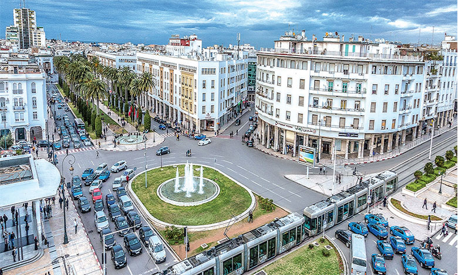
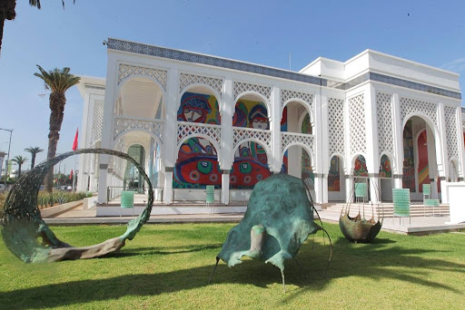

Rabat ville
Le capital administratif du Marroc.

La medina
Murailles Almohades, murs d’enceinte de la Kasbah, ou encore le fleuve Bouregreg… c’est l’une des rares médinas du Royaume à être aussi bien protégée

Vallee Ouad Bouregreg
Fleuve passant entre Sale et Rabat.

Musée Mohammed VI d’art moderne et contemporain
la première institution muséale dans le Royaume.